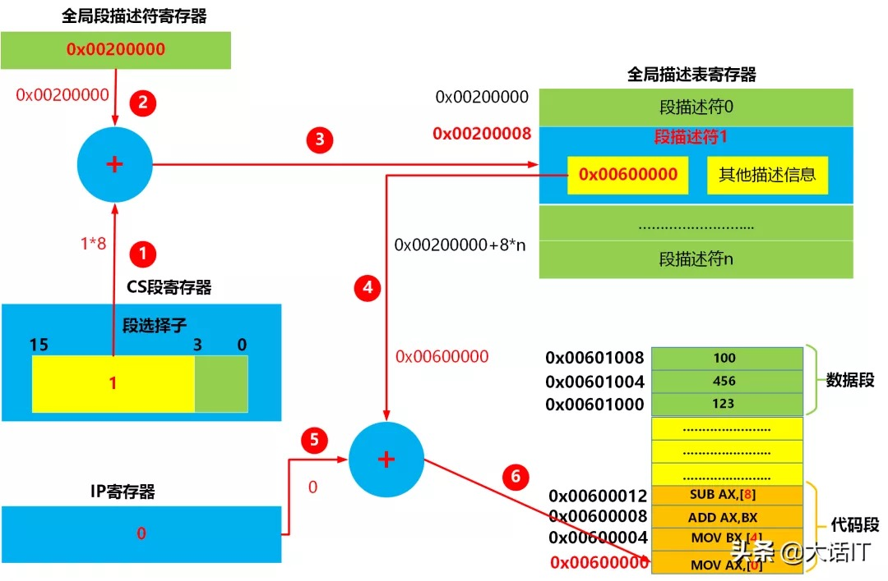
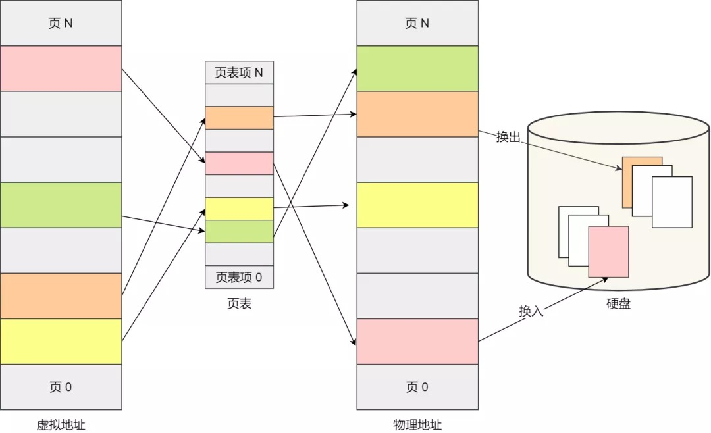

概述
- 总结 Linux 内存管理原理. 讲述虚拟内存、分段、分页的进化过程.
- 计算机启动时, 分页机制必须提交准备好才可以运行真正的
start_kernel()函数.
虚拟内存的由来
如果你是电子相关专业的，肯定在大学里捣鼓过单片机。
单片机是没有操作系统的，所以每次写完代码，都需要借助工具把程序烧录进去，这样程序才能跑起来。
另外，单片机的 CPU 是直接操作内存的「物理地址」。
在这种情况下，要想在内存中同时运行两个程序是不可能的。如果第二个程序在 2000 的位置写入一个新的值，将会擦掉第一个程序存放在相同位置上的所有内容，所以同时运行两个程序是根本行不通的，这两个程序会立刻崩溃。
操作系统是如何解决这个问题呢？
这里关键的问题是这两个程序都引用了绝对物理地址，而这正是我们最需要避免的。
我们可以把进程所使用的地址「隔离」开来，即让操作系统为每个进程分配独立的一套「虚拟地址」，人人都有，大家自己玩自己的地址就行，互不干涉。但是有个前提每个进程都不能访问物理地址，至于虚拟地址最终怎么落到物理内存里，对进程来说是透明的，操作系统已经把这些都安排的明明白白了。
操作系统会提供一种机制，将不同进程的虚拟地址和不同内存的物理地址映射起来。
如果程序要访问虚拟地址的时候，由操作系统转换成不同的物理地址，这样不同的进程运行的时候，写入的是不同的物理地址，这样就不会冲突了。
于是，这里就引出了两种地址的概念：
-
我们程序所使用的内存地址叫做虚拟内存地址（Virtual Memory Address）
-
实际存在硬件里面的空间地址叫物理内存地址（Physical Memory Address）。
操作系统引入了虚拟内存，进程持有的虚拟地址会通过 CPU 芯片中的内存管理单元（MMU）的映射关系，来转换变成物理地址，然后再通过物理地址访问内存，如下图所示：

操作系统是如何管理虚拟地址与物理地址之间的关系？
主要有两种方式，分别是内存分段和内存分页，分段是比较早提出的，我们先来看看内存分段。
了解分段的原理之前我们需要提前说明一些 CPU 寄存器.
著名的 CPU 寄存器
- cs （代码段寄存器）
- ss （栈段寄存器）
- ds （数据段寄存器）
- gdtr 寄存器, 存放
全局描述符GDT（Global Descriptor Table)的地址. - GDT 本身则存放在内存中.
- idtr，存放中断向量表的地址.
中断向量表IDT(Interrupt Descriptor Table)有多行，每一行代表某一个中断号发生之后，要执行的函数. - IDT 本身则存放在内存中
内存分段
程序是由若干个逻辑分段组成的，如可由代码分段、数据分段、栈段、堆段组成。不同的段是有不同的属性的，所以就用分段（Segmentation）的形式把这些段分离出来。
分段机制下的虚拟地址由两部分组成，段选择子和段内偏移量。

-
段选择子就保存在段寄存器里面。段选择子里面最重要的是段号，用作段表的索引。段表里面保存的是这个段的基地址、段的界限和特权等级等。 -
虚拟地址中的段内偏移量应该位于 0 和段界限之间，如果段内偏移量是合法的，就将段基地址加上段内偏移量得到物理内存地址。
-
这里提到的
段表, 就是全局描述符表GDT（Global Descriptor Table), 它的实际位置存放在内存中, CPU 的gdtr寄存器存放了 GDT 的地址.
在上面了，知道了虚拟地址是通过段表与物理地址进行映射的，分段机制会把程序的虚拟地址分成 4 个段，每个段在段表中有一个项，在这一项找到段的基地址，再加上偏移量，于是就能找到物理内存中的地址，如下图：
如果要访问段 3 中偏移量 500 的虚拟地址，我们可以计算出物理地址为，段 3 基地址 7000 + 偏移量 500 = 7500。
如何从虚拟地址得到对应的物理地址
【段选择子+段偏移地址】中的段选择子可以认为是一个索引，这个索引指向了全局段描述符表中的一项，全局段描述表存储在内存中，它的起始地址存储在全局段描述符寄存器中。
全局段描述符表有很多个段描述符，每个段描述符占用 8 个字节，这个段描述符里面就包括了段基址，另外还有一些安全性相关的描述信息例如段的可读，可写，可执行，段的大小等。
段选择子存储在了段寄存器中，总共 16 位,其中高 13 位就是全局段描述表的索引。
段选择符（段选择子）结构： 
当 CPU 开始执行代码段的第一条指令时,会将代码段的选择子放入到 CS 段寄存器中,然后 CPU 从段寄存器中的获取段选择子，然后截取选择子的高 13 位获取索引，然后根据全局描述符表寄存器的地址找到全局描述符表的起始地址，根据起始地址+索引*8 找到段描述符,然后根据段描述符获取段的基址，段的基址加上 ip 寄存器中的偏移地址就是指令的物理地址，如下图所示 1~6 步骤所示

当 CPU 执行到 0x00600000 处的代码指令时，该指令为 MOV AX,[0]，该指令的意思是把地址 0 处的数据存储到 AX 寄存器，这个 0 就是数据段的偏移地址，此时 CPU 会将数据段的选择子加入到 DS 段寄存器中,然后 CPU 获取段选择的高 13 位获取索引，然后根据全局描述符表寄存器的地址找到全局描述符表的起始地址，根据起始地址+索引*8 找到段描述符,然后根据段描述符获取段的基址，段的基址加上数据段的偏移地址就是数据的物理地址，如下图 1~6 步骤所示
分段机制的问题
分段的办法很好，解决了程序本身不需要关心具体的物理内存地址的问题，但它也有一些不足之处：
-
第一个就是内存碎片的问题。
-
第二个就是内存交换的效率低的问题。
接下来，说说为什么会有这两个问题。
我们先来看看，分段为什么会产生内存碎片的问题？
我们来看看这样一个例子。假设有 1G 的物理内存，用户执行了多个程序，其中：
-
游戏占用了 512MB 内存
-
浏览器占用了 128MB 内存
-
音乐占用了 256 MB 内存。
这个时候，如果我们关闭了浏览器，则空闲内存还有 1024 - 512 - 256 = 256MB。
如果这个 256MB 不是连续的，被分成了两段 128 MB 内存，这就会导致没有空间再打开一个 200MB 的程序。
这里的内存碎片的问题共有两处地方：
-
外部内存碎片，也就是产生了多个不连续的小物理内存，导致新的程序无法被装载；
-
内部内存碎片，程序所有的内存都被装载到了物理内存，但是这个程序有部分的内存可能并不是很常使用，这也会导致内存的浪费；
针对上面两种内存碎片的问题，解决的方式会有所不同。
解决外部内存碎片的问题就是内存交换。
可以把音乐程序占用的那 256MB 内存写到硬盘上，然后再从硬盘上读回来到内存里。不过再读回的时候，我们不能装载回原来的位置，而是紧紧跟着那已经被占用了的 512MB 内存后面。这样就能空缺出连续的 256MB 空间，于是新的 200MB 程序就可以装载进来。
这个内存交换空间，在 Linux 系统里，也就是我们常看到的 Swap 空间，这块空间是从硬盘划分出来的，用于内存与硬盘的空间交换。
再来看看，分段为什么会导致内存交换效率低的问题？
对于多进程的系统来说，用分段的方式，内存碎片是很容易产生的，产生了内存碎片，那不得不重新 Swap 内存区域，这个过程会产生性能瓶颈。
因为硬盘的访问速度要比内存慢太多了，每一次内存交换，我们都需要把一大段连续的内存数据写到硬盘上。
所以，如果内存交换的时候，交换的是一个占内存空间很大的程序，这样整个机器都会显得卡顿。
为了解决内存分段的内存碎片和内存交换效率低的问题，就出现了内存分页。
内存分页
分段的好处就是能产生连续的内存空间，但是会出现内存碎片和内存交换的空间太大的问题。
要解决这些问题，那么就要想出能少出现一些内存碎片的办法。另外，当需要进行内存交换的时候，让需要交换写入或者从磁盘装载的数据更少一点，这样就可以解决问题了。这个办法，也就是内存分页（Paging）。
分页是把整个虚拟和物理内存空间切成一段段固定尺寸的大小。这样一个连续并且尺寸固定的内存空间，我们叫页（Page）。在 Linux 下，每一页的大小为 4KB。
虚拟地址与物理地址之间通过页表来映射，如下图：

页表实际上存储在 CPU 的内存管理单元 （MMU） 中，于是 CPU 就可以直接通过 MMU，找出要实际要访问的物理内存地址。
而当进程访问的虚拟地址在页表中查不到时，系统会产生一个缺页异常，进入系统内核空间分配物理内存、更新进程页表，最后再返回用户空间，恢复进程的运行。
分页是怎么解决分段的内存碎片、内存交换效率低的问题？
由于内存空间都是预先划分好的，也就不会像分段会产生间隙非常小的内存，这正是分段会产生内存碎片的原因。而采用了分页，那么释放的内存都是以页为单位释放的，也就不会产生无法给进程使用的小内存。
如果内存空间不够，操作系统会把其他正在运行的进程中的「最近没被使用」的内存页面给释放掉，也就是暂时写在硬盘上，称为换出（Swap Out）。一旦需要的时候，再加载进来，称为换入（Swap In）。所以，一次性写入磁盘的也只有少数的一个页或者几个页，不会花太多时间，内存交换的效率就相对比较高。

更进一步地，分页的方式使得我们在加载程序的时候，不再需要一次性都把程序加载到物理内存中。我们完全可以在进行虚拟内存和物理内存的页之间的映射之后，并不真的把页加载到物理内存里，而是只有在程序运行中，需要用到对应虚拟内存页里面的指令和数据时，再加载到物理内存里面去。
分页机制下，虚拟地址和物理地址是如何映射的？
在分页机制下，虚拟地址分为两部分，页号和页内偏移。页号作为页表的索引，页表包含物理页每页所在物理内存的基地址，这个基地址与页内偏移的组合就形成了物理内存地址，见下图。
Linux 下页表
- Linux 中使用
struct mm_struct表示进程的虚拟地址空间 mm_struct中有一个pgd域, 指向struct pgd_t表示进程的页表
总结一下，对于一个内存地址转换，其实就是这样三个步骤：
-
把虚拟内存地址，切分成页号和偏移量；
-
根据页号，从页表里面，查询对应的物理页号；
-
直接拿物理页号，加上前面的偏移量，就得到了物理内存地址。
下面举个例子，虚拟内存中的页通过页表映射为了物理内存中的页，如下图：

单极页表的问题和多级页表的引入
Linux 下段页式内存管理
1 什么是段页式内存管理
内存分段和内存分页并不是对立的，它们是可以组合起来在同一个系统中使用的，那么组合起来后，通常称为段页式内存管理。
段页式内存管理实现的方式：
-
先将程序划分为多个有逻辑意义的段，也就是前面提到的分段机制；
-
接着再把每个段划分为多个页，也就是对分段划分出来的连续空间，再划分固定大小的页；
这样，地址结构就由段号、段内页号和页内位移三部分组成。
用于段页式地址变换的数据结构是每一个程序一张段表，每个段又建立一张页表，段表中的地址是页表的起始地址，而页表中的地址则为某页的物理页号，如图所示：
段页式地址变换中要得到物理地址须经过三次内存访问：
-
第一次访问段表，得到页表起始地址；
-
第二次访问页表，得到物理页号；
-
第三次将物理页号与页内位移组合，得到物理地址。
可用软、硬件相结合的方法实现段页式地址变换，这样虽然增加了硬件成本和系统开销，但提高了内存的利用率。
2 Linux 下的段页式内存管理
那么，Linux 操作系统采用了哪种方式来管理内存呢？
在回答这个问题前，我们得先看看 Intel 处理器的发展历史.
早期 Intel 的处理器从 80286 开始使用的是段式内存管理。但是很快发现，光有段式内存管理而没有页式内存管理是不够的，这会使它的 X86 系列会失去市场的竞争力。因此，在不久以后的 80386 中就实现了对页式内存管理。也就是说，80386 除了完成并完善从 80286 开始的段式内存管理的同时还实现了页式内存管理。
但是这个 80386 的页式内存管理设计时，没有绕开段式内存管理，而是建立在段式内存管理的基础上，这就意味着，页式内存管理的作用是在由段式内存管理所映射而成的的地址上再加上一层地址映射。
由于此时段式内存管理映射而成的地址不再是“物理地址”了，Intel 就称之为“线性地址”（也称虚拟地址）。于是，段式内存管理先将逻辑地址映射成线性地址，然后再由页式内存管理将线性地址映射成物理地址。
这里说明下逻辑地址和线性地址：
-
程序所使用的地址，通常是没被段式内存管理映射的地址，称为
逻辑地址； -
通过段式内存管理映射的地址，称为
线性地址，也叫虚拟地址；
逻辑地址是「段式内存管理」转换前的地址，线性地址则是「页式内存管理」转换前的地址。
2.1 Linux 内存主要采用的是页式内存管理，但同时也不可避免地涉及了段机制。
这主要是上面 Intel 处理器发展历史导致的，因为 Intel X86 CPU 一律对程序中使用的地址先进行段式映射，然后才能进行页式映射。既然 CPU 的硬件结构是这样，Linux 内核也只好服从 Intel 的选择。
但是事实上，Linux 内核所采取的办法是使段式映射的过程实际上不起什么作用。也就是说，“上有政策，下有对策”，若惹不起就躲着走。
Linux 系统中的每个段都是从 0 地址开始的整个 4GB 虚拟空间（32 位环境下），也就是所有的段的起始地址都是一样的。这意味着，Linux 系统中的代码，包括操作系统本身的代码和应用程序代码，所面对的地址空间都是线性地址空间（虚拟地址），这种做法相当于屏蔽了处理器中的逻辑地址概念，段只被用于访问控制和内存保护。
- 四个主要的 Linux 段的段描述符字段的值
| 段 | Base | G | Limit | S | Type | DPL | D/B | P |
|---|---|---|---|---|---|---|---|---|
| 用户代码段 | 0x00000000 | 1 | 0xfffff | 1 | 10 | 3 | 1 | 1 |
| 用户数据段 | 0x00000000 | 1 | 0xfffff | 1 | 2 | 3 | 1 | 1 |
| 内核代码段 | 0x00000000 | 1 | 0xfffff | 1 | 10 | 0 | 1 | 1 |
| 内核数据段 | 0x00000000 | 1 | 0xfffff | 1 | 2 | 0 | 1 | 1 |
-
- 相应的
段选择符由宏__USER_CS,__USER_DS,__KERNEL_CS,__KERNEL_DS分别定义.例如, 为了对内核代码段寻址，内核只需要把__KERNEL_CS宏产生的值装进cs段寄存器即可.
- 相应的
-
注意
-
- 1 与段相关的线性地址都 0 开始，达到 2 的 32 次方-1 的寻址限长. 这就意味着在用户态或内核态下的所有进程可以使用相同的逻辑地址.
-
- 2 所有段都从
0x00000000开始, 表明 Linux 下逻辑地址与线性地址是一致的,即逻辑地址的偏移量字段的值与相应线性地址的值总是一致.
- 2 所有段都从
我们再来瞧一瞧，Linux 的虚拟地址空间是如何分布的？
在 Linux 操作系统中，虚拟地址空间的内部又被分为内核空间和用户空间两部分，不同位数的系统，地址空间的范围也不同。比如最常见的 32 位和 64 位系统，如下所示：
通过这里可以看出：
-
32 位系统的内核空间占用 1G，位于最高处，剩下的 3G 是用户空间；
-
64 位系统的内核空间和用户空间都是 128T，分别占据整个内存空间的最高和最低处，剩下的中间部分是未定义的。
再来说说，内核空间与用户空间的区别：
-
进程在用户态时，只能访问用户空间内存；
-
只有进入内核态后，才可以访问内核空间的内存；
虽然每个进程都各自有独立的虚拟内存，但是每个虚拟内存中的内核地址，其实关联的都是相同的物理内存。这样，进程切换到内核态后，就可以很方便地访问内核空间内存。
接下来，进一步了解虚拟空间的划分情况，用户空间和内核空间划分的方式是不同的，内核空间的分布情况就不多说了。
我们看看用户空间分布的情况，以 32 位系统为例，我画了一张图来表示它们的关系：
通过这张图你可以看到，用户空间内存，从低到高分别是 7 种不同的内存段：
-
1 程序文件段，包括二进制可执行代码；
-
2 已初始化数据段，包括静态常量；
-
3 未初始化数据段，包括未初始化的静态变量；
-
4 堆段，包括动态分配的内存，从低地址开始向上增长；
-
5 文件映射段，包括动态库、共享内存等，从低地址开始向上增长（跟硬件和内核版本有关）
-
6 栈段，包括局部变量和函数调用的上下文等。栈的大小是固定的，一般是 8 MB。当然系统也提供了参数，以便我们自定义大小；
-
7 内存的最高端存放的是命令行参数和环境变量.
Linux 下内存子系统的优化技能
1 KSM 和 透明大页的区别
-
如果开启 KSM，kernel 层面会有 ksmd 进程把内容完全一样的物理页进行合并，并标记为 cow (copy on write)， 以减少物理页消耗
-
透明大页的作用是:
-
- 一个进程如果需要大量内存，那么底层申请的物理页可以大于 4KB，比如 16KB 一个物理页，减少虚拟地址到物理地址的映射条目，从而减少页表大小，加快虚拟地址到物理地址的翻译速度
2 Linux 内存子系统所有优化点罗列
- （一） 节约内存
-
- 1 KSM
-
- 2 父子进程的 COW（写时 Copy）
-
- 3 能够分配小于一个 page 的内存，slab 分配器
-
（二） 提高效率
-
- 1 透明大页（通过减少页表映射条目）
-
- 2 NUMBA 。让 CPU 就近访问内存